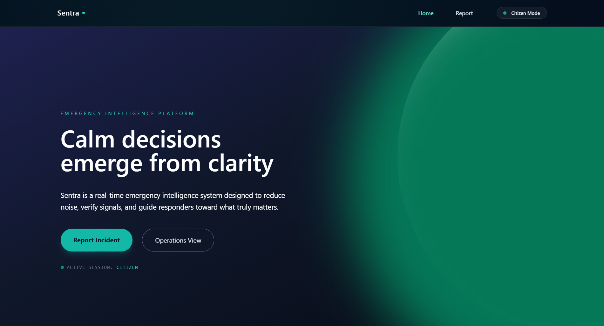

Project Overview

Sentra is an AI-powered civic safety and emergency reporting platform that enables citizens to report real-world issues such as smog, fire, medical emergencies, accidents, and public hazards in real time. By integrating geolocation, AI classification, and an interactive map-based dashboard, Sentra helps authorities take on-spot action for faster and smarter resolution.
Problem & Solution
The Problem
Cities often rely on fragmented, manual complaint systems that result in delayed responses, lack of transparency, and inefficient issue tracking. Citizens have no reliable way to ensure their complaints are seen and acted upon in time.
The Solution
Sentra provides a unified digital platform where citizens can report issues instantly. With AI-based issue classification, real-time map visualization, and authority dashboards, Sentra ensures faster response, accountability, and improved urban safety.
My Role & Contributions
I developed Sentra as a Full Stack Developer, working across frontend interfaces, backend systems, geolocation services, and AI-based issue categorization pipelines.
- Frontend Development
- Built a responsive reporting interface for citizens.
- Designed an interactive map-based dashboard for authorities.
- Backend & AI Logic
- Implemented AI-driven issue classification (fire, smog, medical, etc.).
- Built APIs for real-time reporting and dashboard updates.
- System Architecture
- Designed scalable workflows for city-level deployment.
- Ensured real-time data synchronization between users and responders.
Technologies Used
- HTML5
- CSS3
- JavaScript (ES6+)
- React.js
- Maps & Geolocation APIs
- AI-Based Issue Classification
- Cloud Backend
- Git & GitHub
Challenges & Learnings
- Real-Time Sync: Ensuring live updates between reporters and dashboard users.
- False Reports: Designing validation and filtering mechanisms.
- Scalability: Preparing architecture for city-wide adoption.
Futuristic AI Model Deployment
Sentra is designed with a future-ready AI deployment architecture that enables scalable, efficient, and intelligent model operations across urban environments. The system is built to support both cloud and edge-based AI for optimal performance.
- Edge AI Processing: Critical detection models will be deployed on edge devices for low-latency response during fire, medical, or hazard incidents.
- Hybrid Cloud AI: Complex analytics and pattern learning are handled on cloud-based AI for continuous system improvement.
- Auto Model Updates: Supports OTA (Over-The-Air) updates to deploy improved AI models without service disruption.
- Explainable AI: Ensures transparency in how the system classifies and prioritizes incidents, building trust with authorities and citizens.
- Federated Learning: Enables learning from distributed city data while preserving privacy and data security.
Future Enhancements
- Integration with Smart City and municipal systems.
- AI-based severity prediction and prioritization.
- Mobile app with offline reporting support.
- Advanced analytics for urban safety insights.